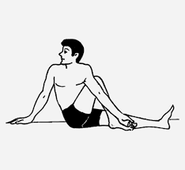

आसन > वक्रासन :

-
वक्रासन, जिसे "अर्ध मत्येन्द्रासन" भी कहा जाता है, एक महत्वपूर्ण योग आसन है जो रीढ़ की हड्डी को
मोड़ने और पाचन तंत्र को सक्रिय करने के लिए उपयोगी है।
वक्रासन करने की विधि :
- आरंभिक स्थिति: समतल और साफ जगह पर दंडासन में बैठें। पैरों को सीधा रखें और रीढ़ को सीधा
रखें।
- दाहिने पैर को मोड़ना: अपने दाहिने पैर को घुटने से मोड़ें और इसे बाएं घुटने के बाहर रखें।
- बायां हाथ दाहिने पैर के ऊपर: अपने बाएं हाथ को दाहिने घुटने के पास लाएं और दाहिने हाथ को
पीछे
की ओर ले जाकर जमीन पर रखें।
- ट्विस्ट करना: धीरे-धीरे अपनी रीढ़ को मोड़ें और दाहिने कंधे की ओर देखें। कुछ समय तक इस
स्थिति
में रहें।
- सामान्य स्थिति में लौटना: धीरे-धीरे अपने हाथ और रीढ़ को वापस लाएं और पैरों को सीधा करें।
दूसरी तरफ से भी यही क्रिया दोहराएं।
लाभ :
- वक्रासन का नियमित अभ्यास रीढ़ की लचीलेपन को बढ़ाता है और पाचन तंत्र को सक्रिय करता है।
- यह पीठ दर्द को कम करने और शरीर के संतुलन को सुधारने में मदद करता है।
Move to top